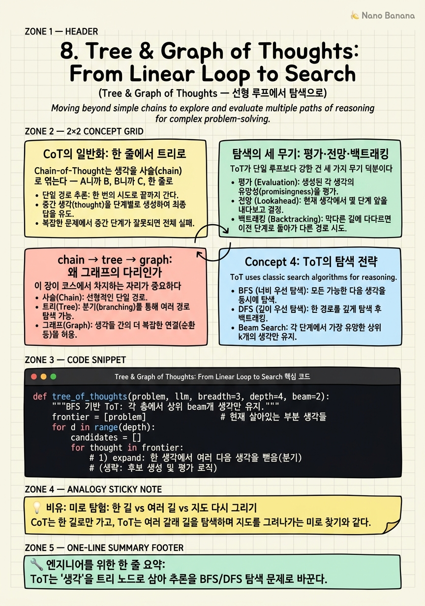

Tree & Graph of Thoughts: From Linear Loop to Search

🎯 학습 목표
- ToT가 CoT를 어떻게 일반화하는지(선형→트리) 설명한다
- self-evaluation·lookahead·backtracking을 탐색의 요소로 이해한다
- chain → tree → graph 추론 구조의 계보를 그린다
- GoT가 트리를 그래프로 확장하며 무엇을 더 표현하는지(병합·순환) 안다
- 탐색 구조가 왜 loop→graph 전환의 다리인지 설명한다
2~7장의 루프에는 공통점이 하나 있다. 한 번에 한 줄로 나아간다는 것이다. Thought 하나, Action 하나, 그리고 다음. 마치 미로에서 한 방향으로만 걷는 것과 같다. 막다른 길을 만나면? 되돌아올 방법이 마땅찮다. 여러 갈래를 동시에 저울질할 방법도 없다.
Tree of Thoughts(Yao et al., NeurIPS 2023)는 이 한계를 정면으로 깬다. 아이디어는 이렇다 — '생각(thought)'을 트리의 노드로 삼아라. 한 지점에서 여러 다음 생각을 뻗고(분기), 각 갈래가 얼마나 유망한지 스스로 평가하고(self-evaluation), 나쁜 길은 버리고 좋은 길로 가되, 막히면 되돌아온다(backtracking). 요컨대 추론을 고전적 탐색 문제(BFS/DFS) 로 바꾼다.
"deliberate decision making by considering multiple different reasoning paths and self-evaluating choices ... as well as looking ahead or backtracking when necessary."
그리고 Graph of Thoughts(Besta et al., 2023)가 한 발 더 나간다. 트리는 부모-자식만 있지만, 그래프는 서로 다른 갈래의 생각을 병합하거나 순환시킬 수 있다. chain → tree → graph로 이어지는 이 계보가 바로 loop에서 graph 엔지니어링으로 넘어가는 개념적 다리다. 이 장에서 우리는 '단일 루프'가 어떻게 '구조화된 탐색'으로 펼쳐지는지를 본다.
핵심 내용
CoT의 일반화: 한 줄에서 트리로
Chain-of-Thought는 생각을 사슬(chain) 로 엮는다 — A니까 B, B니까 C, 한 줄로. 문제는 A에서 갈 수 있는 길이 여럿일 때다. CoT는 그중 하나를 골라 끝까지 가버린다. 그 선택이 틀리면 통째로 실패다.
Tree of Thoughts는 이 사슬을 트리로 편다.
"ToT generalizes over the popular Chain of Thought approach ... enables exploration over coherent units of text (thoughts)."
한 노드(현재까지의 생각)에서 여러 후보 생각을 자식으로 뻗는다. 예컨대 수학 퍼즐이라면 '이 수를 먼저 더한다', '이 수를 먼저 곱한다' 등 여러 첫수를 병렬로 펼친다. 각 갈래를 조금씩 진행해보고, 유망한 쪽으로 탐색을 집중한다.
핵심 부품이 자기평가(self-evaluation) 다. 각 중간 생각에 대해 LLM 스스로 '이 길이 정답에 가까운가?'를 점수 매긴다. 이 점수가 탐색의 나침반이 되어, BFS(넓게 훑기)나 DFS(깊게 파기)로 트리를 뒤진다. 3장 Self-Refine의 자기비평이 '한 답을 고치는' 데 쓰였다면, 여기선 '여러 갈래 중 어디로 갈지 고르는' 데 쓰인다 — 같은 자기평가 능력이 탐색의 엔진이 된다.
탐색의 세 무기: 평가·전망·백트래킹
ToT가 단일 루프보다 강한 건 세 가지 무기 덕분이다.
Self-evaluation(자기평가) = 각 갈래의 유망함을 스스로 점수화. 어디에 자원을 쏟을지 정하는 나침반.
Lookahead(전망) = 한 수 앞을 내다보고, 이 길이 결국 막다른 길인지 미리 가늠. 체스 선수가 몇 수 앞을 읽는 것과 같다.
Backtracking(백트래킹) = 막다른 길에 다다르면 부모 노드로 되돌아가 다른 형제 갈래를 시도. 선형 루프에는 없는 '되돌아가기' 능력이다.
이 셋이 함께 작동하면, 에이전트는 24게임·창작·계획 같은 '탐색이 필요한' 문제에서 단일 루프를 크게 앞선다. 공식 구현(princeton-nlp/tree-of-thought-llm)은 실제로 BFS/DFS를 코드로 담고 있다.
대가도 분명하다. 비용이다. 트리를 넓게 펼치면 LLM 호출이 노드 수만큼 폭증한다. 그래서 ToT는 '탐색의 이득이 비용을 정당화하는' 어려운 문제에만 쓴다. 쉬운 문제엔 단일 루프가 낫다 — 6장의 '복잡성은 이득이 증명될 때만'이 여기서도 관통한다. 탐색 폭(branching factor)과 깊이를 어떻게 제한할지가 실무 튜닝의 핵심이다.
chain → tree → graph: 왜 그래프의 다리인가
이 장이 코스에서 차지하는 자리가 중요하다. 8장은 loop(선형)에서 graph(구조)로 넘어가는 개념적 경첩이다.
추론 구조의 계보를 보자.
| 구조 | 표현 | 능력 |
|---|---|---|
| Chain (CoT) | 한 줄 | 순차 추론 |
| Tree (ToT) | 분기·백트래킹 | 탐색·비교 |
| Graph (GoT) | 병합·순환 | 갈래 통합·재사용 |
Graph of Thoughts는 트리의 한계를 넘는다. 트리에서 두 갈래는 절대 다시 만나지 못한다(부모-자식뿐). 하지만 그래프에서는 서로 다른 갈래의 생각을 하나로 병합할 수 있다 — 예컨대 두 부분해를 합쳐 전체해를 만들거나, 한 생각을 여러 곳에서 재사용하거나, 개선 루프를 순환으로 표현한다.
Graph of Thoughts는 ToT의 트리를 명시적으로 그래프로 일반화하며, 서베이들은 ToT를 chain→tree→graph 아크 위에 배치한다.
여기서 결정적 전환이 일어난다. '생각의 그래프'는 곧 '작업의 그래프'로 자연스럽게 미끄러진다. 노드가 '중간 생각'에서 '작업 단계'로 바뀌면, 그게 바로 9~10장의 ReWOO·LLMCompiler·LangGraph다. 8장은 추론 층위에서 그래프를 도입해, 오케스트레이션 층위의 그래프로 가는 사고의 다리를 놓는다. 루프를 명시적 구조로 펼치는 첫 걸음이 여기다.
💡 비유로 이해하기
미로를 빠져나가는 세 사람을 보자.
Chain-of-Thought 탐험가는 갈림길마다 직감으로 한 길을 골라 앞만 보고 걷는다. 운이 좋으면 빠르지만, 막다른 길을 만나면 되돌아올 줄 몰라 그냥 벽 앞에 멈춘다. 한 번의 잘못된 선택이 전부를 망친다.
Tree of Thoughts 탐험가는 다르다. 갈림길에서 여러 길을 조금씩 가보고, 각 길이 '출구에 가까워 보이는지' 평가한다(self-evaluation). 유망한 길로 나아가되, 막히면 되돌아와(backtracking) 다른 길을 시도한다. 갈림길 몇 개를 미리 내다보기도(lookahead) 한다. 느리지만, 어려운 미로에서 훨씬 확실하게 출구를 찾는다.
Graph of Thoughts 탐험가는 한 발 더 간다. 여러 길을 탐험하다 '아, 이 두 통로가 사실 같은 방으로 이어지네' 하고 경로를 합친다(병합). 서로 다른 탐험에서 얻은 부분 지도를 하나로 꿰매고, 이미 지나온 길을 재활용한다. 미로를 '한 줄의 발자국'이 아니라 '연결된 지도'로 이해한다.
핵심은 — 미로가 단순하면 첫 번째 탐험가가 제일 빠르다. 하지만 미로가 복잡할수록, 여러 길을 저울질하고 되돌아오고 합칠 줄 아는 탐험가가 이긴다. 그리고 '발자국(선형 루프)'에서 '지도(그래프)'로 사고를 바꾸는 순간, 우리는 그래프 엔지니어링의 문턱에 선다.
💻 코드 예시
Tree of Thoughts의 BFS 탐색을 구현해보자. 핵심은 '한 노드에서 여러 생각을 뻗고(expand) → 각각을 자기평가(evaluate) → 상위 b개만 남겨(prune) 다음 깊이로'를 반복하는 것이다. 선형 루프(2장)와 나란히 놓고 보면, for 하나가 '한 줄 전진'에서 '층별 탐색'으로 바뀐 게 보인다.
def tree_of_thoughts(problem, llm, breadth=3, depth=4, beam=2):
"""BFS 기반 ToT: 각 층에서 상위 beam개 생각만 유지."""
frontier = [problem] # 현재 살아있는 부분 생각들
for d in range(depth):
candidates = []
for thought in frontier:
# 1) expand: 한 생각에서 여러 다음 생각을 뻗음(분기)
nexts = llm(f"현재까지 추론:\n{thought}\n\n"
f"가능한 다음 단계 {breadth}가지를 제시하라.",
n=breadth)
for nx in nexts:
branch = thought + "\n" + nx
# 2) evaluate: 이 갈래가 정답에 얼마나 가까운지 자기평가
score = float(llm(
f"이 추론이 문제 해결에 얼마나 유망한가? 0~10 숫자만:\n{branch}"))
candidates.append((score, branch))
if not candidates:
break
# 3) prune: 상위 beam개만 살려 다음 깊이로 (BFS + beam search)
candidates.sort(reverse=True)
frontier = [b for _, b in candidates[:beam]]
best_score = candidates[0][0]
if best_score >= 9.5: # 정지: 충분히 좋은 해 발견
return frontier[0]
return frontier[0] # 가장 유망한 갈래 반환
선형 루프와의 차이를 층별로 읽자. (1) expand = 분기 — 2장의 ReAct는 한 스텝에 행동 하나였지만, 여기선 한 생각에서 breadth개의 갈래를 동시에 뻗는다. 이게 트리의 '가지치기'다. (2) evaluate = 자기평가 나침반 — 각 갈래를 LLM이 0~10으로 채점한다. 3장 자기비평 능력이 '탐색 방향키'로 재활용된다. (3) prune = beam search — 모든 갈래를 다 키우면 비용이 지수로 폭발하므로, 매 층에서 상위 beam개만 살린다. breadth·depth·beam을 조절하는 게 '탐색의 폭과 비용'을 튜닝하는 손잡이다. 백트래킹은 이 beam이 '더 나은 형제 갈래로 자연히 되돌아가는' 형태로 녹아 있다. 이 코드에서 노드의 내용물을 '중간 생각'에서 '실행할 작업'으로 바꾸면, 그대로 9장의 작업 DAG로 넘어간다 — 추론 그래프에서 작업 그래프로.
🏭 현업에서의 평가
✅ 시니어가 보는 것
- 탐색이 필요한 문제와 단일 루프로 충분한 문제를 구분하는 판단
- self-evaluation·lookahead·backtracking을 탐색의 구성요소로 이해
- 탐색 폭·깊이·beam으로 비용을 통제하는 실무 감각
- chain→tree→graph 계보가 추론에서 오케스트레이션 그래프로 이어짐을 이해
⚠️ 레드 플래그
- 모든 문제에 ToT를 남발해 비용을 폭증시킴(단일 루프로 충분한 경우 무시)
- 탐색의 지수적 호출 비용을 고려하지 않음
- self-evaluation의 신뢰성 문제(3장 self-bias)를 인지 못 함
- ToT를 단발 프롬프트 기법으로만 보고 탐색 구조를 못 봄
🎤 예상 인터뷰 질문
- 어떤 문제에 Tree of Thoughts가 단일 CoT/ReAct 루프보다 확실히 유리하며, 그 대가는?
- ToT의 자기평가가 틀리면 탐색 전체가 어떻게 오도되며, 어떻게 완화하는가?
- chain·tree·graph 추론 구조의 표현력 차이는 무엇이고, 이것이 에이전트 오케스트레이션과 어떻게 연결되는가?
✨ 핵심 요약
생각 = 탐색 노드
ToT는 '생각'을 트리 노드로 삼아 추론을 BFS/DFS 탐색 문제로 바꾼다.
CoT의 일반화
한 줄 사슬(chain)을 여러 갈래 트리로 펴서, 한 번의 잘못된 선택이 전부를 망치는 걸 막는다.
탐색의 세 무기
self-evaluation(나침반)·lookahead(전망)·backtracking(되돌아가기)이 단일 루프를 넘어서게 한다.
자기평가의 재활용
3장 자기비평 능력이 여기선 '어느 갈래로 갈지'를 정하는 탐색 방향키가 된다.
비용의 대가
트리를 넓히면 호출이 폭증한다 — 폭·깊이·beam으로 통제하고, 어려운 문제에만 쓴다.
chain→tree→graph
GoT는 트리를 그래프로 확장해 갈래의 병합·순환·재사용을 표현한다.
그래프로의 다리
'생각의 그래프'는 노드를 작업으로 바꾸면 곧 '작업의 그래프'(9~10장)가 된다.